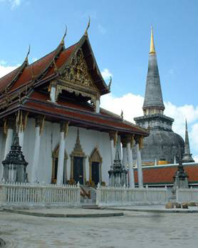

เมนู |
วัดพระมหาธาตุ วรมหาวิหาร ตั้งอยู่ริมถนนราชดำเนิน ตำบลในเมือง วัดพระมหาธาตุเป็น พระอารามหลวงชั้นเอก ชั้นวรมหาวิหาร เดิมชื่อวัดพระบรมธาตุ เป็นปูชนียสถานที่สำคัญที่สุดแห่งหนึ่งของ ภาคใต้และประเทศไทย ตามตำนานพระบรมธาตุนครศรีธรรมราช กล่าวว่า เจ้าชายธนกุมารและพระนางเหมชาลา เป็นผู้นำเสด็จพระบรมธาตุมาประดิษฐาน ณ หาดทรายแก้วและสร้างเจดีย์องค์เล็ก ๆ เป็นที่หมายไว้ ต่อมาในปีมหาศักราช 1098 (พ.ศ.1719) พระเจ้าศรีธรรมาโศกราช ทรงสร้างเมืองนครศรีธรรมราชขึ้นพร้อมการก่อสร้างเจดีย์ขึ้นใหม่ พระบรมธาตุเจดีย์มีลักษณะรูปแบบศิลปกรรมเป็นเจดีย์ทรงลังกาสูง 55.78 เมตร (กรมศิลปากรวัดเมื่อการบูรณะปลียอดทองคำเมื่อ พ.ศ. 2538) จากฐานบัวคว่ำบัวหงายถึงปลียอด 6.80 เมตร ใช้ทองคำเนื้อสิบหุ้มโดยรอบ ภายในวัดพระมหาธาตุฯ มีวิหารที่มีความสำคัญหลายหลังประดิษฐานอยู่โดยเฉพาะอย่างยิ่ง พระวิหารหลวงมีความงามตามแบบสถาปัตยกรรมสมัยอยุธยา วิหารสามจอม วิหารที่มีพระพุทธรูปทรงเครื่องอย่างกษัตริย์ชื่อว่า “พระศรีธรรมาโศกราช” ประดิษฐานอยู่ วิหารพระมหาภิเนษกรมน์ (วิหารพระทรงม้า) วิหารทับเกษตร ส่วนวิหารเขียน และวิหารโพธิ์ลังกานั้นเป็นสถานที่จัดแสดงโบราณวัตถุที่พุทธศาสนิกชนถวาย เป็นพุทธบูชา 
|
| หน้าแรก | |
| วัดพระมหาธาตุ วรมหาวิหาร | |
| วัดเขาขุนพนมและศูนย์วิทยาศาสตร์เพื่อ การศึกษาเขาขุนพนม | |
| ศูนย์ศิลปาชีพบ้านเนินธัมมัง | |
| ศาล หลวงต้นไทร | |
| สวนสมเด็จพระศรีนครินทร์ 84 (ทุ่งท่าลาด) | |
| แหลมตะลุมพุก | |
| วัดแม่เจ้าอยู่หัว (พระนางเลือดขาว) | |
| เขื่อนบ้านพ่อ ปากพนัง | |
| น้ำตกกรุงชิง | |
| ล่องแก่งคลองกลาย | |
| อ่างเก็บน้ำจุฬาภรณ์ | |
| วัดอาตาปีคีรีเขต (วัดถํ้าเพด้าน) | |